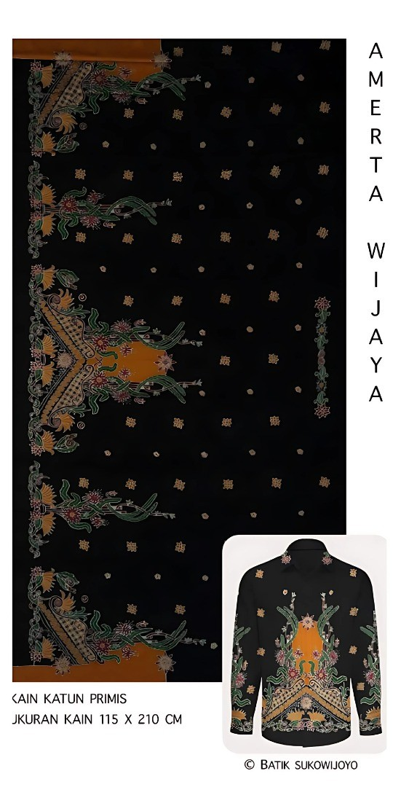

Amerta Wijaya
Rp 230.000,00
Filosofi Motif
Amerta adalah air kehidupan abadi dalam mitologi kuno yang memberikan kemakmuran dan umur panjang. Motif Amerta Wijaya adalah doa untuk kesehatan, kesejahteraan, dan kelimpahan yang tak terputus. Rangkaian flora yang tumbuh subur melambangkan pertumbuhan, kesuburan, dan rezeki yang terus mengalir. Kemenangan yang diharapkan adalah tercapainya kehidupan yang sejahtera, tenteram, dan penuh berkah.
Spesifikasi
- Bahan: Katun Primis
- Ukuran: 115 x 210
- Pewarna: Alami (Warna bisa di Sesuaikan dengan pesanan)
- Proses: 100% Tulis Tangan